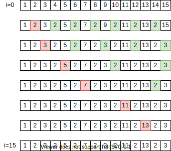
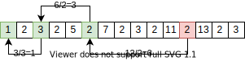

素数¶
素数判定¶
素数は \(1\) 以外の約数を持たないことから、約数列挙をベースに素数判定ができる。
計算量は約数列挙と同じく \(\mathcal{O}(\sqrt{n})\)。
実装¶
[1]:
def is_prime(n):
"""
nが素数であるかどうかを判定する
"""
i = 2
while i * i <= n:
if n % i == 0:
return False
i += 1
return True
[2]:
print(is_prime(2017))
True
[3]:
print(is_prime(2019))
False
素数列挙¶
エラトステネスの篩 (Wikipedia)
\(n\) 以下の素数を列挙する。
最も単純な方法としては素数判定(約数列挙)を \(n\) 回試せばよい。
エラトステネスの篩と呼ばれる手法では、約数列挙より倍数列挙のほうが高速であることを利用し、もう少し効率的に列挙する。
アルゴリズム¶
\(n\)以下の正の整数について「\(1\)の倍数」「\(2\)の倍数」\(\cdots\) 「\(n\)の倍数」の順で計 \(n\) 回走査する。いずれの倍数でもないものが素数である。
ここで、小さい順に倍数判定を行うようにすると、\(4\) などの合成数は走査の前に取り除かれる。
結局のところ走査は \(n\) 回より少なく、素数に対してのみ走査を行うことになる。
計算量¶
エラトステネスの篩など、素数の出現数を考慮する計算量の見積もりは簡単ではない。ここでは大雑把な見積もりを扱う。
\(n\) 以下のすべての整数に対して「\(1\)の倍数」「\(2\)の倍数」\(\cdots\)「\(n\)の倍数」を走査することを考える。
走査における計算量は \(n\) 以下の倍数の個数の和となり、その値は
\[H_n = \sum^n_{k=1} \frac{n}{k} = \frac{n}{1} + \frac{n}{2} + \cdots + \frac{n}{n}\]
つまり、倍数の走査は計算量 \(n\mathcal{O}(n\log{n})\) で行うことができる。
素数倍数の走査だけを行うエラトステネスの篩については、これより小さな計算量となることが期待できる。
実際のところ、計算量 \(\mathcal{O}(n\log{\log{n}})\) であることが知られている。
実装¶
[4]:
def sieve(n):
"""
n以下の素数を昇順に列挙する
"""
is_prime = [True for i in range(n+1)]
primes = []
for i in range(2, n+1):
if is_prime[i]:
primes.append(i)
for j in range(i+i, n+1, i):
is_prime[j] = False
return primes
[5]:
print(sieve(37))
[2, 3, 5, 7, 11, 13, 17, 19, 23, 29, 31, 37]
素因数分解¶
素因数分解は、整数 \(n\) を素数の積で表したもの。
例えば \(500\) の素因数分解は
\[500 = 2^2 \times 5^3\]
と表される。右辺に現れる \(2, 5\) (指数の底) を素因数という。
最も単純な方法は試し割り法による素数判定をベースにしたもので、素因数の個数を数え上げる処理が追加される。
計算量¶
試し割りベースの実装における計算量を考える。
計算量の見積もりにおいては 素因数の個数 \(\Omega(n)\) を考える必要がある。
\[\Omega(n) \leq \ln{n} / \ln{2} = \log_2{n}\]
が成り立つという事実を利用すると、素因数 \(p\) に対して数え上げ処理 (内側のwhileループに対応する) は高々 \(\log_2{p}\) 回実行されることがわかる。
よって計算量は \(\mathcal{O}(\sqrt{n}\log{n})\) 。
実装¶
[6]:
from collections import Counter
def prime_factorization(n):
"""
nの素因数分解を求める
"""
c = Counter()
i = 2
while i * i <= n:
while n % i == 0:
n //= i
c[i] += 1
i += 1
if n > 1:
c[n] += 1
return c
[7]:
from operator import mul
from functools import reduce
factors = prime_factorization(500)
print(factors)
print(reduce(mul, [p**n for p, n in factors.items()]))
factors = prime_factorization(10**9+7)
print(factors)
print(reduce(mul, [p**n for p, n in factors.items()]))
Counter({5: 3, 2: 2})
500
Counter({1000000007: 1})
1000000007
素因数分解の高速化¶
https://qiita.com/rsk0315_h4x/items/ff3b542a4468679fb409
素因数分解したい数の上限が \(n \leq 10^6\) 程度に収まるならば、エラトステネスの篩を使って素因数分解の計算量を落とすことができる。
エラトステネスの篩において、「ある数が割り切れたかどうか (bool値)」 を記録する代わりに「ある数を割りきる素数のうち最小の数」を記録する。

この篩を用いて素因数分解を行う。
数 \(n\) の素因数分解は、篩の \(n\) 番目に書かれた数で順次割ることにより求められる。
例えば \(12\) の素因数分解は、次の図のように \(12 \rightarrow 6 \rightarrow 3 \rightarrow 1\) と割っていく。
割る数として使用した数が素因数であり、この場合は \(\{2, 2, 3\}\) である。

試し割法による素因数分解では 試し割りに \(\mathcal{O}(\sqrt{n})\) 、素因数の数え上げに \(\mathcal{O}(\log{n})\) かかるので、全体として \(\mathcal{O}(\sqrt{n}\log{n})\) の計算量となっていた。
エラトステネスの篩を使うと試し割りをせずに済むので、素因数分解のクエリは \(\mathcal{O}(\log{n})\) で処理できるようになる。
事前に篩の作成が必要なので、計算量は前処理 \(\mathcal{O}(n\log{\log{n}})\) 、クエリ \(\mathcal{O}(\log{n})\) となる。
[8]:
from collections import Counter
def fast_prime_factorization_preprocess(n):
"""
素因数テーブルを作成する
"""
min_prime_factor = [i for i in range(n+1)]
for i in range(2, n+1):
if min_prime_factor[i] == i:
for j in range(i+i, n+1, i):
if min_prime_factor[j] == j:
min_prime_factor[j] = i
return min_prime_factor
def fast_prime_factorization(n, min_prime_factor):
"""
nの素因数分解を求める
"""
c = Counter()
while n > 1:
f = min_prime_factor[n]
c[f] += 1
n //= f
return c
[9]:
from operator import mul
from functools import reduce
pf = fast_prime_factorization_preprocess(10**6)
factors = fast_prime_factorization(999982, pf)
print(factors)
print(reduce(mul, [p**n for p, n in factors.items()]))
factors = fast_prime_factorization(999983, pf)
print(factors)
print(reduce(mul, [p**n for p, n in factors.items()]))
Counter({2: 1, 79: 1, 6329: 1})
999982
Counter({999983: 1})
999983